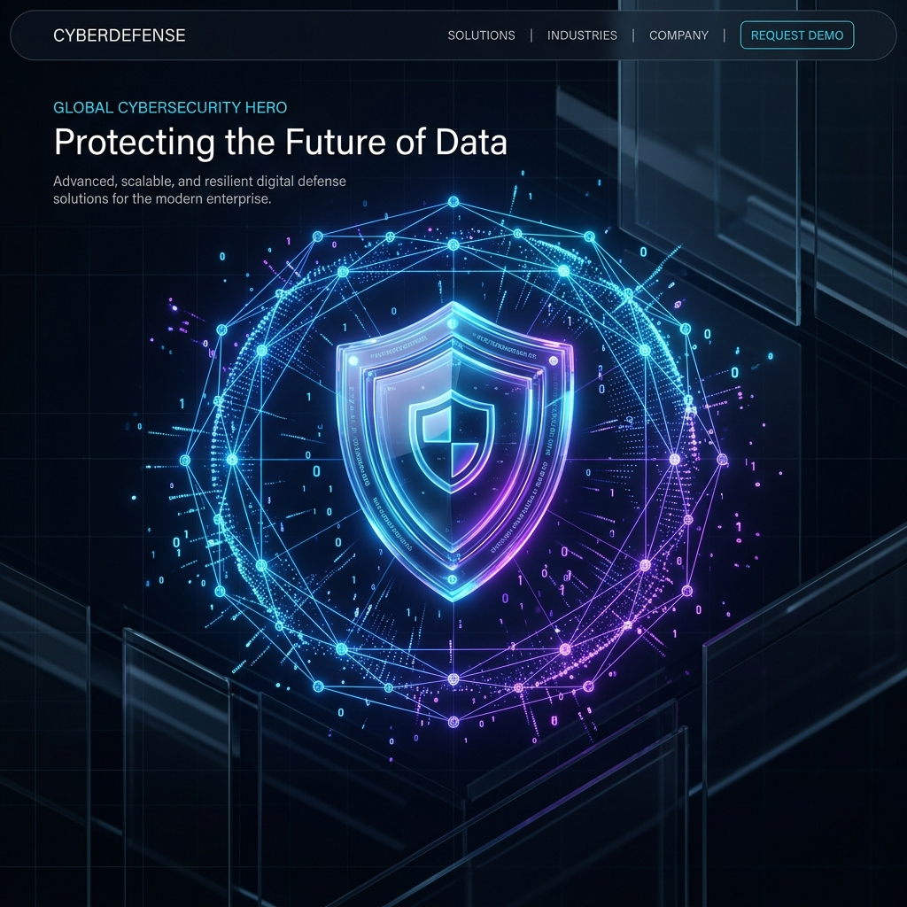

Secure Your Digital
Ecosystem
GuardLink identifies critical vulnerabilities and misconfigurations using non-destructive, passive techniques. Protect your assets before they become targets.

Built for Modern Security
Comprehensive checks based on OWASP Top 10 principles.
Header Analysis
Deep inspection of CSP, HSTS, and X-Frame-Options to prevent injection and clickjacking.
HTTPS Enforcement
Verifies protocol security and ensures data encryption standards are met across all endpoints.
Endpoint Discovery
Passive searching for exposed backups, .env files, and sensitive administrative panels.
Injection Probing
Safe, passive test payloads to detect potential SQL and Script injection entry points.
The GuardLink Process
Target Input
Enter the URL of the application you want to assess.
Passive Analysis
Our engine performs non-destructive probes and header logic checks.
Risk Dashboard
Receive a severity-coded report with actionable security insights.